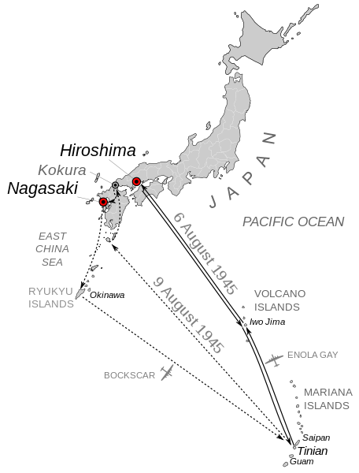

Startseite
Unterschied Atom- und Wasserstoffbombe
Hiroshima
Nagasaki
Kontakt
Nagasaki
Wahl des Ziels

Nagasaki war ursprünglich nicht auf der Liste der Ziele, wurde aber als Ersatz für
die alte Kaiserstadt Kyoto zugefügt. Auf Anordnung von US-Kriegsminister Henry Stimson,
der Kyoto einst selbst besucht hatte und um dessen Bedeutung als kulturelles Zentrum
Japans wusste, war die Stadt aus der Liste der potentiellen Ziele gestrichen worden.
Nagasaki hatte damals etwa 240.000 bis 260.000 Einwohner und war bedeutender
Standort des Mitsubishi-Rüstungskonzerns, der dort große Werften betrieb,
in denen etwa 20.000 koreanische Zwangsarbeiter unter anderem Kreuzer und
Torpedoboote für die Kaiserlich Japanische Marine bauten und reparierten.
Dort wurden auch die Torpedos gebaut, mit denen Japan die US-Flotte auf Pearl
Harbor angegriffen hatte. Die Stadt gehörte damit zu den möglichen Angriffszielen
der US-Luftwaffe. In Nagasaki waren nur wenige japanische Soldaten stationiert.
Startvorbereitung
Auf Tinian war die Plutoniumbombe „Fat Man“ mit einer Sprengkraft von 22.000
Tonnen TNT in großer Eile und unter Auslassung wichtiger Kontrolltests zusammengebaut
worden. Die Beteiligten standen unter dem Eindruck der Versenkung der USS Indianapolis
am 30. Juli 1945. Dieser schwere Kreuzer war nach der Ablieferung von Teilen der Hiroshimabombe
in Tinian auf der Weiterfahrt nach Guam von zwei Torpedos des japanischen U-Boots I-58
getroffen worden und in wenigen Minuten gesunken. Es war der letzte Verlust eines
US-Kriegsschiffes im Pazifikkrieg. Von den knapp 1.200 Mann Besatzung konnten nur
318 gerettet werden. Wäre dies auf dem Hinweg geschehen, so wäre Japan möglicherweise
ein weiterer Atombombenangriff erspart geblieben; schon die Gewinnung von waffenfähigem
Material für drei Bomben hatte über ein Jahr gedauert.
Die Generäle auf Tinian beschlossen den Abwurf der zweiten Bombe am
8. August selbst. Als Befehlsgrundlage galt ihnen die Order des US-Präsidenten
vom 24. Juli, wonach die „Spezialbomben“ nach dem 3. August einsatzbereit sein
und nacheinander abgeworfen werden sollten. Eine weitere Anordnung holten sie
nicht ein. Sie zogen das für den 11. August angesetzte Abwurfdatum zwei Tage vor,
da schlechtes Wetter vorhergesagt war. Nach dem Zusammenbau, vor dem Verladen ins
Flugzeug, wurde das Äußere der Bombe einschließlich des Leitwerks von einer Vielzahl
an Mitarbeitern mit Sprüchen beschriftet. Nachts gegen 2 Uhr am 9. August 1945
startete der 25-jährige Pilot Charles W. Sweeney den Bomber Bockscar mit teilweise
neuer Besatzung und zwei Begleitflugzeugen. Sein Ziel war Kokura, eine Stadt mit viel
mehr Rüstungsindustrie als Nagasaki.
Bei der Ankunft lag Kokura unter einer dichten Wolkendecke; bei drei Anflügen
war die Sicht stark behindert, sodass Sweeney den Angriff abbrach. Er durfte die
Bombe nur nach Sicht abwerfen, da er die Rüstungsbetriebe treffen sollte. Da dies
nicht möglich war und das Flugbenzin zur Neige ging, flog er das Ausweichziel Nagasaki an.
Abwurf
Ursprünglich war ein Direktangriff auf die Schiffswerften geplant.
Da in Nagasaki aber ebenfalls schlechte Sichtverhältnisse herrschten,
konnte kein exakter Zielabwurf durchgeführt werden. Der Pilot hätte den
Angriff unter solchen Umständen abbrechen müssen, entschied sich jedoch
für einen Radaranflug. Nur ohne die Bombe an Bord konnte man gerade noch
Okinawa für eine Notlandung erreichen. Die Treibstoffreserve in den Tanks
betrug gerade noch sieben Gallonen (26,50 Liter).
Die Bombe wurde um 11:02 Uhr Ortszeit etwa drei Kilometer nordwestlich des
geplanten Zielpunkts bei ♁32° 46′ 26″ N, 129° 51′ 48″ O über dicht bewohntem
Gebiet abgeworfen. Sie sollte eigentlich den Mitsubishi-Konzern treffen,
verfehlte ihr Ziel aber um mehr als zwei Kilometer. Sie zerstörte fast das
halbe Stadtgebiet. Die Explosion in etwa 470 Metern Höhe über dem Boden
vernichtete im Umkreis von einem Kilometer 80 Prozent aller Gebäude –
zumeist Holzhäuser – und ließ nur wenige Überlebende zurück. Sie explodierte
in einem Tal, sodass die umliegenden Berge die Auswirkungen auf die
Umgebung der Stadt dämpften. Die Bombe setzte über eine Entfernung von
vier Kilometern Objekte in Brand. Ein Feuersturm blieb aus. Der Atompilz
erhob sich 18 Kilometer in die Atmosphäre.
Opfer
 Etwa 30 Prozent der Bevölkerung wohnten 2000 Meter oder weniger vom Bodennullpunkt entfernt.
Im Innenstadtbereich starben sofort etwa 22.000 Menschen; weitere 39.000 starben
innerhalb der nächsten vier Monate. Andere schätzen 70.000 bis 80.000 Tote. Die Zahl
der Verletzten in Nagasaki betrug 74.909 Personen.
Etwa 30 Prozent der Bevölkerung wohnten 2000 Meter oder weniger vom Bodennullpunkt entfernt.
Im Innenstadtbereich starben sofort etwa 22.000 Menschen; weitere 39.000 starben
innerhalb der nächsten vier Monate. Andere schätzen 70.000 bis 80.000 Tote. Die Zahl
der Verletzten in Nagasaki betrug 74.909 Personen.